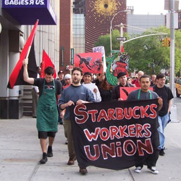

Submitted on Fri, 05/25/2007 - 11:48am
Sisters and Brothers:
Starbucks barista Christina Rosevear and her 19 month-old daughter need your help now. Christina recently learned that she was pregnant with her second child and she promptly informed the store manager at the Northern California Starbucks where she works. Instead of being considerate of Christina's pregnancy, Starbucks began to discriminate against her.
Christina developed severe morning sickness and needed to take the occasional day off. On several occasions after she took a day off, she'd find that her work hours would be cut the following week depriving her of much needed income. Sometimes she'd receive as little as four hours of work per week! As a single mom and a low-wage worker, Christina can't afford such a dramatic pay cut. Things only got worse and now Christina is facing the prospect of an unjust termination.
Christina's doctor ordered her to take time off work to deal with a pregnancy-related back ailment that may be connected to heavy lifting at Starbucks. When Christina was ready to come back to work, the store manager warned that he might fire her for being away from the job. Christina has a meeting coming up with the manager and it's critical that Starbucks hear from people of conscience now that discriminating against someone for a pregnancy or illness is wrong.
Instead of being brushed under the rug like so many retail workers are everyday, Christina has chosen to fight back and has joined the Starbucks Workers Union [StarbucksUnion.org]. In her own words, "I need some help because I refuse to let a big corporation like Starbucks push me around."
Please lend a hand and stand by Christina as she fights this abuse from Starbucks: Take a moment to participate in this e-mail action demanding that Starbucks not fire Christina and immediately cease discriminating against her:
http://starbucksunion.org/node/1641
Submitted on Fri, 05/25/2007 - 11:37am
The Bay Area IWW participated in the organizing of this event and members attended the pickets.
By Steve Zeltser and Jeff Paterson, May 19, 2007
 Dozens of anti-war protesters including the leadership and many members of the Oakland Education Association OEA joined the picket lines this morning and in the evening of the SSA (Stevedoring Services of America)shipping terminal in Oakland, California to protest the war and the lack of funding for schools in Oakland. The picketers demanded that the US get out of Iraq and called on other trade unionists throughout the United States to mobilize in action to stop the war.
Dozens of anti-war protesters including the leadership and many members of the Oakland Education Association OEA joined the picket lines this morning and in the evening of the SSA (Stevedoring Services of America)shipping terminal in Oakland, California to protest the war and the lack of funding for schools in Oakland. The picketers demanded that the US get out of Iraq and called on other trade unionists throughout the United States to mobilize in action to stop the war.
The action which began at in the early morning before the first day shift of ILWU Local 10 longshoremen and women as well as longshore clerks of ILWU Local 34 was organized to encourage the dockworkers to honor the picket line which they are allowed to do under their contract. As a result of a political education campaign in the ILWU Local 10, most workers were fully in support of the picket and did not cross the line. Newly elected Democratic mayor Ronald Dellums had also sent a letter to the Port Action committee that organized the picket which declared that the war "had been a blunder" and said he opposed the war. The police however not only prevented anti-war picketer from driving to the docks in the morning but also stopped major news media from bringing their vans to the picketlines to cover the demonstration. The police when questioned by this reporter said that the news vans were not allowed in the area since it was a "safety issue". In 2003, the Oakland police in collaboration with the SSA company and state security forces launched a violent attack on a similar anti-war protest. They also shot at many ILWU members for the first time since the 1930's.
Submitted on Fri, 05/25/2007 - 11:15am
By Dean Dempsey and the Sbux Organizing Committee
 For the Global Day of Action for Starbucks workers, the Starbucks Organizing Committee of the Bay Area General Membership Branch gathered outside a Starbucks location in Oakland, CA, to pass out fliers and to talk to the public.
For the Global Day of Action for Starbucks workers, the Starbucks Organizing Committee of the Bay Area General Membership Branch gathered outside a Starbucks location in Oakland, CA, to pass out fliers and to talk to the public.
Before the distribution of union literature outside the store, two wobblies went inside the Starbucks to talk to the workers about what we were doing and what the Starbucks Workers Union (SWU) is all about.
Out of the four workers we talked to, three of them were in support of the idea of unionizing. Their main grievances were their low wages, treatment from both customers and management, and most of all, their inability to have sufficient and secured hours. Two contacts were made.
Submitted on Fri, 05/25/2007 - 10:56am
 Four years ago the Bay Area IWW was contacted byworkers at the East Bay Depot for Creative Reuse in Oakland. They had numerous grievances and decided union membership would be a way to bring their concerns to management. Eventually the workers voted unanimously for the IWW.
Four years ago the Bay Area IWW was contacted byworkers at the East Bay Depot for Creative Reuse in Oakland. They had numerous grievances and decided union membership would be a way to bring their concerns to management. Eventually the workers voted unanimously for the IWW.
During and after the union organizing campaign management took a very mean spirited approach to the union workers. Including harassment, intimidation, firing and forcing workers to quit. On top of the union busting strategy the company lost grant money to run an art outreach program to local schools. This development caused four workers to be laid off. Eventually, the union walked away from the bargaining table as nearly all the workers were laid off, fired or quit. Unfair Labor Practice charges were filed but had little effect.
Submitted on Thu, 05/24/2007 - 1:02am
The broadcast will discuss Liza Featherstone's recent Notion post (http://www.thenation.com/blogs/notion?pid=196455) detailing new legal and political troubles for Starbucks over its treatment of its workers and its anti-union efforts.
In New York, the National Labor Relations Board has accused Starbucks of violating workers' freedom of association in about thirty different ways, including illegally firing, threatening and disciplining workers for supporting the union. Managers forbade workers from talking about the union -- even when off-duty -- or wearing union buttons. The trial against Starbucks is in July. Liza Featherstone, author of , will report from the trial for her blog. Liza will be joined in studio by Pete Montalbano, a Starbucks barista and IWW member who is a veteran of the campaign.